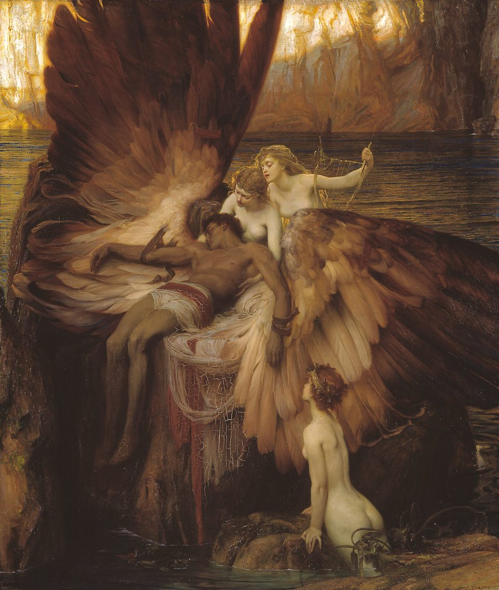

01 / REAL LIFE
Род деятельности
Информация о занятиях и деятельности Горицвет в реальной жизни. Этот текст можно будет полностью изменить через админ-панель.
Цепь имён — здесь будет полная версия
Здесь появится короткое приветствие или небольшое описание Горицвет — её истории, характера и мира.
«Не всякий полёт измеряется высотой. Иногда достаточно однажды расправить крылья».
AN ORIGINAL EPIGRAPH · THE MYTH OF ICARUS

Информация о занятиях и деятельности Горицвет в реальной жизни. Этот текст можно будет полностью изменить через админ-панель.
Любимые занятия, творческие интересы и всё то, чем Горицвет любит наполнять своё время.
История Горицвет в CatWar: сообщества, роли, проекты и другие игровые занятия. Здесь можно будет разместить несколько отдельных записей или оформить текст единым блоком.
Здесь появится рассказ о семье Горицвет: близкие и родные, отношения и общие истории. Текст и изображение можно будет изменить через админ-панель.
Места, где можно найти связанные с Горицвет материалы и другие проекты.
Изображения: H. J. Draper, The Lament for Icarus (1898), общественное достояние · Греческий меандр (CC0)
Образы, мгновения и разные воплощения Горицвет.